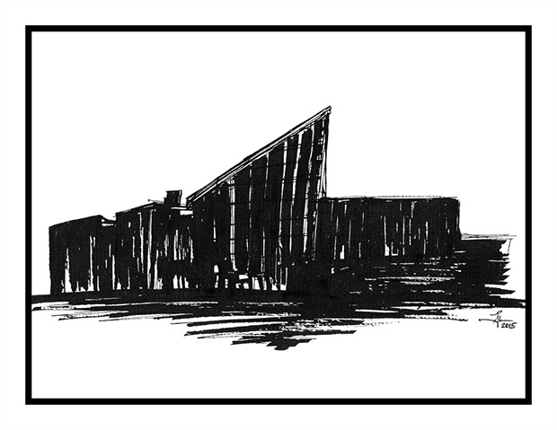

My Art
A collection of my work as an artist who dabbles in the medium of ink, calligraphy, and lettering.
1/7

Eiteljorg Museum, Indianapolis
2/7
Indianapolis Museum of Art
3/7
Indianapolis, From Indy Canal
4/7
Indianapolis, From White River
5/7

Indiana State Museum, Indianapolis
Web Development Projects
Here is a collection of of all sites that I have worked on for a class (Fundamentals of Web Programming
):
Here are some highlights of my projects from the list above.
Personal site for a pet:
A Zen-Garden-like site to showcase CSS changes:
A page that demonstrates the usage of forms:
A page that demonstrates the usage of tables with creative CSS:
GitHub
Also, check out my GitHub repositories here:
Jules Leow at GitHub